침투비파괴검사기사(구) (2008-03-02 기출문제)
1과목: 침투탐상시험원리
1. 그림에서 침투탐상시험시 자외선등에 사용될 필터로서 가장 적절한 빛의 투과상태를 나타낸 곡선인 것은?
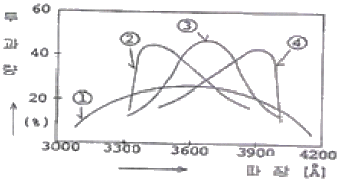
- ①
- ②
- ③
- ④
(정답률: 알수없음)

2. 다음 중 침투탐상시험시 현상처리 과정에서 결함 검출 강도가 가장 심각하게 저하되는 경우는?
- 현상제의 온도가 대기 온도보다 높을 때
- 현상제의 피박 두께가 두꺼울 때
- 부식방지제가 현상제에 첨가되었을 때
- 탐상 표면을 산이나 알칼리로 세척하였을 때
(정답률: 알수없음)
3. 다음 중 침투탐상시험의 특성이 아닌 것은?
- 대형 부품의 현장 검사가 가능하다.
- 미세한 표면 불연속의 검출이 가능하다.
- 불연속의 깊이를 정확하게 측정할 수 있다.
- 서로 다른 침투액을 혼용하여 사용할 경우 강도가 저감되는 효과가 나타날 수 있다.
(정답률: 알수없음)
4. 다음 중 습식현상제를 관리할 때 중요도가 가장 낮은 것은?
- 적심의 형태
- 오염
- 농도
- 세척성
(정답률: 알수없음)
5. 침투탐상시험을 위해 검사체의 표면을 모래 분사(Sand blasting)로 전처리하였을 때 이에 따른 부작용의 예상으로 가장 관계가 큰 것은?
- 결함의 입구가 막힌다.
- 기름 찌꺼기가 결함을 밀봉한다.
- 결함이 빠르게 성장된다.
- 모래 분사에 의해 새로운 결함이 발생된다.
(정답률: 알수없음)
6. 침투탐상시험에 사용되는 침투액의 물리적 특성으로 옳은 것은?
- 침투액은 빨리 건조되어야 한다.
- 침투액은 쉽게 제거되어서는 안된다.
- 침투액은 점성이 높아야 한다.
- 침투액은 적심성이 우수해야 한다.
(정답률: 알수없음)
7. 고장력 강용접부의 경우 용접완료 후 24~48시간 경과 후에 비파괴검사를 실시하는 이유로 가장 옳은 것은?
- 용접완료 후 지연 균열의 발생우려 때문에
- 용접완료 후 피로 균열의 발생우려 때문에
- 용접완료 후 고온 균열의 발생우려 때문에
- 용접완료 후 응력부식 균열의 발생우려 때문에
(정답률: 알수없음)
8. 다음 중 액체와 시험체 표면과의 관계에서 적심성이 가장 좋은 조건은?
- 접촉각이 90°일 때
- 접촉각이 90°를 초과하는 조건일 때
- 접촉각이 135°를 초과하는 조건일 때
- 접촉각이 90° 미만으로 작아지는 조건일 때
(정답률: 알수없음)
9. 침투탐상시험 조작 처리순서과 다음과 같을 때 수행되는 검사 방법으로 가장 적합한 것은?
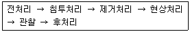
- 수세성 형광침투탐상시험법
- 후유화성 형광침투탐상시험법
- 수세성 염색침투탐상시험법
- 용제제거성 염색침투탐상시험법
(정답률: 알수없음)
10. 다음 침투탐상시험 중 자외선 조사장치를 사용하지 않아도 되는 것은?
- 수세성 침투탐상시험
- 수세성 염색침투탐상시험
- 용제제거성 형광침투탐상시험
- 후유화성 형광침투탐상시험
(정답률: 알수없음)
11. 다음 침투탐상시험법 중 일반적으로 가장 감도가 높으나 검사 비용 또한 가장 많이 드는 단점이 있는 시험법은?
- 후유화성 염색침투탐상시험법
- 후유화성 형광침투탐상시험법
- 수세성 형광침투탐상시험법
- 용제제거성 염색침투탐상시험법
(정답률: 알수없음)
12. 침투액의 성능이 우수한가를 결정하는 2가지 대표적인 물리적 인자는?
- 표면장력 및 접촉각
- 표면장력 및 점성
- 점성 및 접촉각
- 밀도 및 표면장력
(정답률: 알수없음)
13. 침투탐상시험의 현상제에 요구되는 일반적인 특성으로 틀린 것은?
- 침투액의 분산 능력이 좋아야 한다.
- 현상막의 제거가 어려워야 한다.
- 습식현상제는 현탁성이 좋아야 한다.
- 화학적으로 안정하며 독성이 적어야 한다.
(정답률: 알수없음)
14. 사용 중인 기름베이스 유화제의 피로시험에 대한 점검 실시 방법과 가장 거리가 먼 것은?
- 점성 시험
- 수세성 시험
- 수분함량 시험
- 형광휘도 시험
(정답률: 알수없음)
15. 일반적인 침투탐상시험에 침투액과 시험체 표면의 온도는 약 몇 ℃를 넘지 않아야 하는가?
- 15℃
- 30℃
- 50℃
- 75℃
(정답률: 알수없음)
16. 물이 담긴 그릇에 서로 직경이 다른 유리관들을 수직으로 놓았을 때 다음 중 모세관 현상에 의한 상승작용(Lifting Action)이 가장 큰 것은?
- 직경 1mm 유리관
- 직경 5mm 유리관
- 직경 1cm 유리관
- 직경 10cm 유리관
(정답률: 알수없음)
17. 다음 중 침투탐상시험의 장점이 아닌 것은?
- 다른 검사법보다 원리가 비교적 간단하고 이해하기 쉽다.
- 적용방법이 다른 검사법보다 비교적 간단하다.
- 다른 검사법에 비해 모든 불연속의 검출이 가능하다.
- 다른 검사법보다 불연속에 대한 평가가 비교적 쉽다.
(정답률: 알수없음)
18. 동일 조건에서 모세관의 반지름이 2배로 늘어나면 모세관속 액체의 높이는 어떻게 되는가?
- 1/4로 낮아진다.
- 1/2로 낮아진다.
- 2배로 높아진다.
- 4배로 높아진다.
(정답률: 알수없음)
19. 침투탐상시험용 탐상제의 성능 유지관리를 위한 점검 항목 중 형광침투액의 시험에 해당되지 않는 것은?
- 점도
- 비중
- 수분함유량
- 형광휘도
(정답률: 알수없음)
20. 다음 중 침투탐상시험으로 검출이 곤란한 불연속은?
- 단조겹침
- 연삭균열
- 크레이터균열
- 비금속개재물 혼입
(정답률: 알수없음)
2과목: 침투탐상검사
21. 침투탐상시 고온의 열에 방치되었던 세라믹 제품에 나타난 지시로서, 망상모양(그물모양)의 서로 교차한 선으로 나타나는 지시는 무엇 때문에 발생한 것인가?
- 열충격에 의해 발생
- 피로균열에 의해 발생
- 수축균열에 의해 발생
- 연삭균열에 의해 발생
(정답률: 알수없음)
22. 다음 중 사용 중에 발생되는 불연속이 아닌 것은?
- 피로균열
- 응력부식균열
- 핏팅
- 라미네이션
(정답률: 알수없음)
23. 다음 중 현상제는 침투탐상지시의 검출을 어떤 조건으로 만드는가?
- 대조색을 띄게 한다.
- 잉여 침투액을 유화한다.
- 깨끗한 표면으로 만든다.
- 건조된 표면이 되게 한다.
(정답률: 알수없음)
24. 다음의 형광침투탐상에 사용되는 자외선등에서 발생되는 파장 중 눈에 가장 해로운 것은?
- 300mm
- 340mm
- 360mm
- 380mm
(정답률: 알수없음)
25. 형광침투탐상시험에 사용되는 형광물질은 다음 중 어느 파장의 자외선에 가장 예민하게 반응하는가?
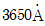
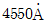
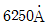
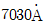
(정답률: 알수없음)
26. 다음 중 일반적인 염색침투액에 비해 후유화성 형광침투액의 장점은?
- 밝은 장소에서 검사가 가능하다.
- 작은 지시들을 더 쉽게 볼 수 있다.
- 탐상에 소요되는 시간이 가장 짧다.
- 추가의 장비가 필요하지 않다.
(정답률: 알수없음)
27. 침투탐상검사의 후처리 과정을 가장 옳게 설명한 것은?
- 침투액의 제거가 용이하도록 가능한 한 신속히 시행한다.
- 침투액의 융해성을 증진시키기 위해 부품을 가열시킨다.
- 침투액의 응집성을 완화시켜 주기 위해서 부품을 냉각시킨다.
- 침투액이 건조되면 될수록 세척이 용이하기 때문에 몇 시간이 경과된 후 시행한다.
(정답률: 알수없음)
28. 침투탐상검사에 사용되는 장치와 기구에 관한 설명으로 적절하지 않은 것은?
- 수세성 형광침투탐상시 세척처리 장치에 자외선등이 구비되어야 한다.
- 시험체가 대형인 경우에는 주로 호스 및 노즐을 이용하여 침투처리를 한다.
- 자동현상장비에서는 주로 침적법으로 현상처리한다.
- 자외선 조사장치에 사용되는 필터는 일반적으로 적자색(red-purple) 유리를 사용한다.
(정답률: 알수없음)
29. 용제제거성 형광침투제로 탐상검사할 대 슬벤트 세척제의 역할은?
- 결함에서 침투제를 제거한다.
- 침투제의 유화속도를 증가시킨다.
- 시험체 표면의 잉여 침투액을 제거한다.
- 시험체 표면의 침투제를 수세성으로 변화시킨다.
(정답률: 알수없음)
30. 현장에서 탐상검사 수행시 유화시간을 가장 이상적으로 설정하는 방법은?
- 시방서의 규격에 의해 설정한다.
- 제조사의 권고에 따라 설정한다.
- 사전에 시험을 통하여 설정한다.
- 유화제 내에 침투제의 오염도를 측정하여 설정한다.
(정답률: 알수없음)
31. 침투탐상검사를 하는 탄소강 시험체의 표면에 발생한 부식, 녹, 산화물, 스케일 등의 오염물을 제거하는 방법으로 가장 적절하지 못한 것은?
- 전기 세척
- 용제 세척
- 중기 블라스팅
- 산, 알칼리 세척
(정답률: 알수없음)
32. 침투탐상검사시 균열검출에 사용되는 두 종류의 침투액에 대해 그들의 감도를 비교하는 방법으로 올바른 것은?
- 접촉각을 측정한다.
- 메니스커스 검사(Meniscus Test)를 한다.
- 비중을 측정하기 위해 비중계를 사용한다.
- 균열이 존재하는 알루미늄 시험편을 사용한다.
(정답률: 알수없음)
33. 전처리 방법 중 증기세척의 가장 큰 특징은?
- 산화물, 유기물의 제거에 좋다.
- 스케일, 슬래그의 제거에 좋다.
- 솔벤트, 알칼리용액의 제거에 좋다.
- 절삭유, 연마제, 그리스 등의 제거에 좋다.
(정답률: 알수없음)
34. 침투탐상검사의 적용 방법 중 붓칠을 해서는 안되는 공정은?
- 유화제 적용
- 침투액 적용
- 현상제 적용
- 현상제 제거
(정답률: 알수없음)
35. 현상법 중 결함부에만 부착되고 그 외의 부분에는 부착되지 않는 현상제를 이용하는 현상법은?
- 무현상법
- 건식현상법
- 습식현상법
- 속건식현상법
(정답률: 알수없음)
36. 다음 중 관찰방법에 대한 설명으로 틀린 것은?
- 염색침투액을 사용할 때에는 관찰면의 밝기는 최소한 500~1000Lx 이상이어야 한다.
- 형광침투액을 사용시는 20Lx 이하의 어두운 곳에서 실시하여야 한다.
- 자외선조사등 사용시 조사등의 강도를 확인하기 위해서는 조도계를 사용하여 검사를 한다.
- 결함의 모양은 확대경으로 관찰하여 결함의 크기를 기록하여도 좋다.
(정답률: 알수없음)
37. 다음 중 수세성 침투액에 대한 물의 오염을 측정하는 계산식으로 옳은 것은?
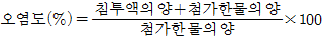
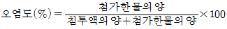
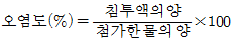
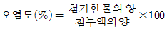
(정답률: 알수없음)
38. 다음 탐상제의 오염형태 중 탐상결과에 가장 적은 영향을 미치는 오염은?
- 수세성 침투액의 물의 오염
- 습식현상제의 물의 오염
- 형광침투액의 산(Acid)의 오염
- 물베이스 유화제의 물의 오염
(정답률: 알수없음)
39. 침투탐상검사를 실시하기 위한 검사준비와 가장 거리 먼 것은?
- 용접부 덧붙임 높이를 측정하였다.
- 작업절차서(작업지시서)를 준비하였다.
- 지시의 관찰을 위해 백열등을 설치하였다.
- 용접부의 슬래그와 스패터의 존재 유무를 확인하였다.
(정답률: 알수없음)
40. 형광침투탐상검사의 관찰방법에 대한 설명 중 틀린 것은?
- 자외선을 직접 눈에 조사시켜서는 안된다.
- 자외선을 차단할 수 있는 안경을 착용하면 좋다.
- 관찰을 시작하기 전 눈을 어둠에 적용시켜야 한다.
- 형광휘도를 높이기 위해 검사체 외의 반사면을 많이 갖추어야 한다.
(정답률: 알수없음)
3과목: 침투탐상관련규격
41. 보일러 및 압력용기에 대한 침투탐상검사(ASME Sec.V Art.6 App.Ⅲ)에 의한 비교시험편 제작의 설명으로 옳은 것은?
- Type 2024 두께 1인치의 알루미늄으로 만든다.
- 각 면의 중앙에 약 직경 1인치의 면적을 300°F에서 견디는 페인트를 사용하여 표시한다.
- 분젠버너로 6⑤°F~795°F 사이의 온도에서 가열하여 만든다.
- 가열 건조하여 만든 시험편을 냉각 후 반으로 잘라 각각 A및 B로 표시한다.
(정답률: 알수없음)
42. 침투탐상 시험방법 및 침투지시모양의 분류(KS B 0816)에 따른 탐상시험에서 세척처리에 스프레이 노즐을 사용할 대 특별한 규정이 없는 한 최대 수압은 약 얼마인가?
- 200kPa
- 225kPa
- 250kPa
- 275kPa
(정답률: 알수없음)
43. 보일러 및 압력용기에 대한 표준침투탐상검사(ASME Sec.V Art.24 SE-165)에 의한 용접부에서 발견될 수 있는 결함은?
- 크레이터 균열
- 겹침
- 수축공
- 라미네이션
(정답률: 알수없음)
44. 배관 용접부의 비파괴검사 방법(KS B 0888)에서 침투탐상시험에 대한 설명으로 옳은 것은?
- 시험의 실시범위는 원칙적으로 지그 부착 자국의 주변에서 그 외부로 5mm 의 길이를 더한 범위로 한다.
- 시험방법의 종류는 원칙적으로 용제제거성 형광침투탐상시험, 속건식 현상법으로 한다.
- 현상처리는 시험면의 표면이 전혀 보이지 않도록 균일하게 도포하여야 한다.
- 시험체에 침투액이 남아 제거가 필요한 경우 후처리는 물스프레이나 에어로 분무하여 처리한다.
(정답률: 알수없음)
45. 보일러 및 압력용기에 대한 침투탐상검사(ASME Sec.V Art.6)에 규정된 티타늄이나 오스테나이트 스테인리스강을 탐상하기 위한 침투액 내의 염소와 불소를 향한 전체 함유량은 무게비로 잔류량의 몇 %를 초과해서는 안되는가?
- 0.01%
- 0.1%
- 1%
- 10%
(정답률: 알수없음)
46. 보일러 및 압력용기에 대한 표준침투탐상검사(ASME Sec.V Art.24 SE-165)에 의한 침투제의 적용에 대한 설명으로 틀린 것은?
- 작은 부품은 침투액이 들어 있는 적당한 액조 또는 탱크에 담근다.
- 크고 복잡한 형태의 부품은 솔질이나 스프레이로 침투액을 적용한다.
- 에어로졸 스프레이는 효과적이고 편리하지만 배기 장치가 필요하다.
- 전기스프레이는 부품상에 과도한 침투액의 축적을 일으킨다.
(정답률: 알수없음)
47. 보일러 및 압력용기에 대한 표준침투탐상검사(ASME Sec.V Art.24 SE-165)에서는 형광침투탐상시험시 어두운 장소에서 눈 적응을 위해 탐상하기 전 최소 몇 분을 기다리도록 권고하는가?
- 최소 10분
- 최소 7분
- 최소 5분
- 최소 1분
(정답률: 알수없음)
48. 보일러 및 압력용기에 대한 침투탐상검사(ASME Sec.V Art.6 App.Ⅱ)에서 니켈합금을 시험하는 경우 공칭지름이 150mm인 유리페트리병에 침투엑 50g을 넣어 90~100℃의 온도에서 60분 동안 가열하였을 때 잔유물의 양이 몇 g 미만이면 이 침투액은 합격한 것으로 하는가?
- 0.025g
- 0.0⑤g
- 0.0025g
- 0.00⑤g
(정답률: 알수없음)
49. 침투탐상 시험방법 및 침투지시모양의 분류(KS B 0816)에 의한 탐상시험에서 침투장치, 유화장치, 세척장치, 암실, 자외선조사장치가 모두 필요한 시험 방법의 기호로 옳은 것은?
- FA-S
- FB-D
- FC-W
- VB-S
(정답률: 알수없음)
50. 침투탐상 시험방법 및 침투지시모양의 분류(KS B 0816)에 따른 탐상시 제거처리를 수행하여야 하는 시험법은?
- 수세성 형광침투액을 사용하는 방법
- 후유화성 형광침투액을 사용하는 방법
- 용제제거성 염색침투액을 사용하는 방법
- 수세성 형광침투액을 사용 및 무현상 처리 방법
(정답률: 알수없음)
51. 보일러 및 압력용기에 대한 표준침투탐상검사(ASME Sec.V Art.24 SE-165)의 시험방법의 종류 및 분류에서 Method C. Type Ⅰ 방법으로 옳은 것은?
- 후유화성 형광침투탐상시험법
- 용제제거성 형광침투탐상시험법
- 수세성 염색침투탐상시험법
- 비수세성 염색침투탐상시험법
(정답률: 알수없음)
52. 침투탐상 시험방법 및 침투지시모양의 분류(KS B 0816)에 의해 모든 검사를 수행하고 난 후 시험보고서를 작성하고자 한다. 시험체의 정보에 대하여 기록할 내용으로 가장 거리가 먼 것은?
- 시험체의 재질
- 시험체의 표면사항
- 시험체의 무게
- 시험체의 모양ㆍ치수
(정답률: 알수없음)
53. 침투탐상 시험방법 및 침투지시모양의 분류(KS B 0816)에 따른 탐상시험에서 반드시 후처리가 필요한 경우는?
- 탐상제가 시험체를 부식시킬 우려가 있는 경우
- 시험 후 열처리를 하는 경우
- 침투지시를 전사하여 기록한 경우
- 현상시간을 길게 하였을 경우
(정답률: 알수없음)
54. 침투탐상 시험방법 및 침투지시모양의 분류(KS B 0816)에 따른 탐상시험에서 분산된 결함의 산정 방법으로 올바른 것은?
- 정해진 면적에 관계없이 2mm 간격 내의 결함의 종류, 개수 또는 개개의 길이를 합산한다.
- 정해진 면적에 관계없이 결함의 종류, 개수 또는 개개의 길이를 합산한다.
- 정해진 면적에 존재하는 2mm 간격 내의 결함의 종류, 개수 또는 개개의 길이를 합산한다.
- 정해진 면적에 존재하는 결함의 종류, 개수 또는 개개의 길이를 합산한다.
(정답률: 알수없음)
55. 침투탐상 시험방법 및 침투지시모양의 분류(KS B 0816)에 따른 A형 대비시험편에 관한 설명으로 옳은 것은?
- 열처리로에 넣고 골고루 520~530℃로 가열한다.
- 대비시험편은 PT-A의 기호로 표시한다.
- 분젠버너로 가열하기 전에 중앙부의 흠을 가공한다.
- 가열 후 공기를 주입하여 냉각시킨다.
(정답률: 알수없음)
56. 원격 컴퓨터에서 파일을 송ㆍ수신하는데 사용하는 프로토콜로 옳은 것은?
- Gopher
- Finger
- FTP
- Telnet
(정답률: 알수없음)
57. 다음이 설명하고 있는 인터넷 보안 방식은?
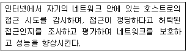
- Cache
- Web Cache
- Firewall
(정답률: 알수없음)
58. 라디오, Pager(호출기)와 같이 데이터를 한 쪽 방향으로만 전달하는 통신 방식은?
- 전이중 통신방식(Full-Duplex)
- 반이중 통신방식(Half-Duplex)
- 단방향 통신방식(Simplex)
- 직렬 전송방식(Serial Transmission)
(정답률: 알수없음)
59. 검색을 위한 자신만의 데이터베이스는 없고 다른 검색엔진에서 결과를 찾아서 사용자에게 보여주는 검색방식을 무엇이라고 하는가?
- 웹 인덱스 방식
- 키워드 방식
- 웹 디렉토리 방식
- 통합형 검색 방식
(정답률: 알수없음)
60. 네트워크 사용자들끼리 뉴스를 서로 주고받는 네트워크 뉴스 그룹은?
- WAIS
- Archie
- Usenet
- inter-casting
(정답률: 알수없음)
4과목: 금속재료학
61. 순철이 Ac3에서 동소변태한 경우 이 때의 격자상수는 어떻게 되는가?
- 작아진다.
- 커진다.
- 변화가 없다.
- 가열속도에 따라 변화한다.
(정답률: 알수없음)
62. 다음 중 해드필드 강(hadfield steel)의 설명으로 옳은 것은?
- Austenite계 고 Mn강이며, 가공경화성이 크다.
- Pearlite계 저 Mn강이며, 가공경화성이 적다.
- Austenite계 고 Mg강이며, 가공경화성이 크다.
- Pearlite계 저 Mg강이며, 가공경화성이 적다.
(정답률: 알수없음)
63. 다음 중 쾌삭강(free cutting steel)의 피삭성을 증가시키는 합금 원소는?
- C
- Si
- Ni
- Se
(정답률: 알수없음)
64. 공석강을 A1 온도 이상으로 가열한 후 차차 온도를 떨어뜨리면서 각 온도에서 등온변태하였을 때의 반응생성의 순서가 옳은 것은?
- Pearlite → Upper Bainite → Lower Bainite → Martensite → 잔류 Austenite
- Martensite → Upper Bainite → Lower Bainite → Pearlite → 잔류 Austenite
- Pearlite → 잔류 Austenite → Lower Bainite → Martensite → Upper Bainite
- Martensite →Lower Bainite → Upper Bainite → 잔류 Austenite → Pearlite
(정답률: 알수없음)
65. 황동의 자연균열(season crack)을 방지하기 위한 방법을 설명한 것 중 틀린 것은?
- 도료나 아연도금을 한다.
- 응력제거 풀림을 한다.
- Sn 이나 Si 를 첨가한다.
- Hg 및 그 화합물을 첨가한다.
(정답률: 알수없음)
66. Al 의 특징을 열거한 것 중 틀린 것은?
- 비중이 2.7 로서 가볍다.
- 내식성, 가공성이 좋다.
- 면심입방격자(FCC)이다.
- 지금(地金) 중의 Fe, Cu, Mn 등의 원소는 도전율을 좋게 한다.
(정답률: 알수없음)
67. 형상기억효과의 종류 중 전방위 형상기억에 대한 설명으로 옳은 것은?
- 일반적인 일방향 형상기억합금이며, 오스테나이트상의 형상만을 기억하는 현상이다.
- 오스테나이트의 형상과 더불어 마텐자이트상이 변형되었을 때의 형상도 기억하는 현상이다.
- 변형상태에서 시효시키면 나타나는 현상으로 온도에 따라 오스테나이트상으로부터 중간상을 거쳐 저온상으로 변태하며 이 때 마텐자이트 변태도 동반되는 현상이다.
- 열탄성 마텐자이트 변태에 기인하며 초탄성에 의한 형상기억 효과는 응력부하온도에 의존하는 현상으로 응력유기 마텐자이트가 외부응력이 제거되면서 오스테나이트로 변태함으로 생기는 현상이다.
(정답률: 알수없음)
68. 적색을 띤 회백색의 금속으로 비중이 9.75, 용융점이 265℃ 이며, 특히 응고할 때 팽창하는 금속은?
- Ce
- Bi
- Te
- In
(정답률: 알수없음)
69. 단면적 20mm2인 환봉을 인장시험한 그래프이다. A점에서의 단면적은 18mm2, B점에서의 단면적은 16mm2 이었을 때 인장강도(kgf/mm2)는?
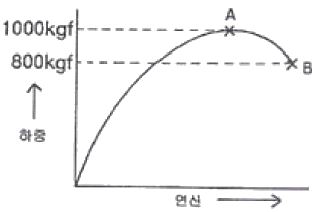
- 25
- 50
- 56
- 63
(정답률: 알수없음)
70. 탄소강 중에 존재하는 합금 원소가 기계적 성질에 미치는 영향을 설명한 것 중 옳은 것은?
- Mn은 강도를 증가시키나, 연신율의 증가로 경도를 감소시키고, 고온에서 소성을 감소시켜 주조성을 좋게 한다.
- Cu는 인장강도, 탄성한계를 높이나, 부식에 대한 저항성을 감소시킨다.
- Si는 입자의 크기를 증대시키며, 경도, 탄성한계 등을 높인다.
- 강 중의 S 는 Mn과 결합하여, MnS 를 만들고 저온 취성의 원인이 된다.
(정답률: 알수없음)
71. 탄소강과 합금강을 300℃ 부근에서 뜨임하면 최저 충격 에너지가 나타난다. 이러한 현상을 무엇이라 하는가?
- 청열취성
- 적열취성
- 시효경화
- 가공취성
(정답률: 알수없음)
72. 0.2% 탄소강이 723℃ 선상에서의 초석 ferrite와 pear-lite 양은 약 몇 % 인가? (단, 공석점의 탄소함량은 0.8% 이다.)
- 초석 Ferrite 75%, Pearlite 25%
- 초석 Ferrite 25%, Pearlite 75%
- 초석 Ferrite 55%, Pearlite 45%
- 초석 Ferrite 45%, Pearlite 55%
(정답률: 알수없음)
73. 백주철을 탈탄열처리하여 순철에 가까운 ferrite 기지로 만들어 연성을 갖는 주철은?
- 펄라이트가단주철
- 흑상가단주철
- 백싱가단주철
- 구상흑연주철
(정답률: 알수없음)
74. 열팽창 계수가 대단히 작아 바이메탈에 사용되는 인바(Invar)는 철(Fe)에 Ni이 어느 정도 함유되어 있는가?
- 17%
- 23%
- 36%
- 47%
(정답률: 알수없음)
75. 연성과 전성이 좋은 황동으로서 색깔도 아름다우며 장식용 잡화나 악기 등의 재료로 쓰이고, 금박(金箔)의 대용으로 쓰이는 재료로서 Cu와 Zn이 8:2 로 합금된 것은?
- 톰백(tombac)
- 문츠메탈(muntz metal)
- 하이 브라스(high brass)
- 카트리즈 브라스(cartridge brass)
(정답률: 알수없음)
76. 응용금속을 세공을 통하여 유출시켜 그 가느다란 흐름을 압력이 걸려있는 물, 공기 혹은 불활성 가스로 빠르게 끊어 금속분말을 제조하는 방법은?
- 분사법(atomization)
- 쇼팅(shotting)
- 스템핑(stamping)
- 그레이닝(graining)
(정답률: 알수없음)
77. 열처리에서 질량효과(Mass effect)에 대한 설명으로 옳은 것은?
- 가열시간의 차이에 다라 재료의 내ㆍ외부가 뒤틀리는 현상
- 재료의 크기에 따라 담금질 효과가 다르게 나타나는 현상
- 시효처리의 일종으로서 재료가 크면 내부의 경도가 외부 경도에 비해 떨어지는 현상
- 뜨임현상의 일종으로서 뜨임 시간이 길어지면 재료 내ㆍ외부에 경도가 달라지는 현상
(정답률: 알수없음)
78. Mg 합금이 구조재료로서 갖는 특성을 설명한 것 중 틀린 것은?
- 소성가공성이 높아 상온변형이 쉽다.
- 비강도가 커서 항공우주용 재료에 유리하다.
- 감쇠능이 주철보다 커서 소음방지 재료로 우수하다.
- 기계가공성이 좋고 아름다운 절삭연이 얻어진다.
(정답률: 알수없음)
79. 오스테나이트계 스테인리스강에 대한 설명으로 틀린 것은?
- 대표적인 조성은 18%Cr-8%Ni 이다.
- 자성체이며, BCC 의 결정구조를 갖는다.
- 오스테나이트조직은 페라이트조직보다 원자밀도가 높아 내식성이 좋다.
- 1100℃ 부근에서 급냉하는 고용화처리를 하여 균일한 오스테나이트조직으로 사용한다.
(정답률: 알수없음)
80. 다음 중 청동(Bronze)에 대한 설명으로 틀린 것은?
- 응고온도 범위가 넓은 Mushy형 응고를 한다.
- 청동은 구리(Cu)+안티몬(Sb)의 합금이다.
- 주석청동 주물의 용탕 유동성을 좋게 하기 위하여 Zn을 첨가하여 사용한다.
- 내해수성이 좋아 선박 등에 많이 사용하는 주석청동은 Admiralty gun metal 이라고 한다.
(정답률: 알수없음)
5과목: 용접일반
81. 용접봉의 용융속도를 가장 잘 설명한 것은?
- 단위시간당 소비되는 모재의 무게
- 단위시간당 소비된 용접봉의 길이 또는 무게
- 일정량의 모재가 소비될 때까지의 시간
- 일정길이의 용접봉이 소비될 때까지의 시간
(정답률: 알수없음)
82. 아크 쏠림의 방지 대책으로 틀린 것은?
- 아크 길이를 짧게 유지한다.
- 접지점 2개를 연결한다.
- 접지점을 될 수 있는 한 용접부 가까이 한다.
- 용접부가 긴 경우 백 스텝(Back Step)방법을 쓴다.
(정답률: 알수없음)
83. 직류 아크 용접에서 모재를 양극(+), 용접봉을 음극(-)에 연결한 극성은?
- 정극성
- 역극성
- 용극성
- 비응극성
(정답률: 알수없음)
84. AW 500이고, 징격 사용율이 60%인 용접기로 400A의 전류로 용접한다면 허용 사용율은 약 몇 %인가?
- 72
- 94
- 108
- 125
(정답률: 알수없음)
85. 양호한 용접이음을 위하여 외부에서 주어지느느 열량은 충분해야 한다. 아크전압 45V, 아크전류 120A, 용접속도가 200(mm/min)일 때 용접입열은?
- 14200 J/cm
- 15200 J/cm
- 16200 J/cm
- 17200 J/cm
(정답률: 알수없음)
86. 다음 피복 아크 용접봉 중에서 작업성은 나쁘나, 기계적 성질, 내균열성이 가장 좋은 용접봉은?
- 티타니아계 용접봉
- 고셀룰로스계 용접봉
- 일미나이트계 용접봉
- 저수소계 용접봉
(정답률: 알수없음)
87. 다음 중 서브머지드 아크 용접법의 장점 설명으로 틀린 것은?
- 용입이 길다.
- 비드 외관이 매우 아름답다.
- 용융속도 및 용착속도가 빠르다.
- 적용재료에 제한을 받지 않는다.
(정답률: 알수없음)
88. 다음 물질 중에서 아세틸렌과 접촉하여도 폭발할 위험성이 없는 것은?
- 철(Fe)
- 동(Cu)
- 은(Ag)
- 수은(Hg)
(정답률: 알수없음)
89. 다음 중 가장 얇은 판이음에 적용되는 용접 홈은?
- H 형홈
- X 형홈
- V 형홈
- I 형홈
(정답률: 알수없음)
90. 용접부를 피닝(peening)하는 주된 목적은?
- 녹 제거
- 잔류 응력의 경감
- 용접 불량의 검사
- 크레이터 균열 방지
(정답률: 알수없음)
91. 일명 충돌용접이라고도 하며 극히 짧으느 지름의 용접을 접합에 사용되고 전원으로 축적된 직류를 사용하는 용접법은?
- 만능 심 용접
- 업셋 용접
- 퍼커션 용접
- 플래시 버트 용접
(정답률: 알수없음)
92. 아크 용접 중에 아크가 중단되어 비드가 오목하게 나타나는 현상을 무엇이라 하는가?
- 크레이터
- 언더 컷
- 오버 랩
- 스패터
(정답률: 알수없음)
93. 산소-아세틸렌 절단과 비교한 산소-프로판(LP) 가스 절단의 설명으로 잘못된 것은?
- 절단 상부 기슭이 녹은 것이 적다.
- 절단면이 미세하며 깨끗하다.
- 슬래그 제거가 쉽다.
- 후판절단시 아세틸렌보다 느리다.
(정답률: 알수없음)
94. 피복 아크 용접봉의 피복제에 습기가 있을 경우 용접시 발생하기 쉬운 대표적인 결함은?
- 언더 컷
- 용입불량
- 오버 랩
- 기공
(정답률: 알수없음)
95. 각 장치가 유기적인 관계를 유지하면서 미리 정해 놓은 시간적 순서에 따라 순차적으로 제어하는 제어 방법은?
- 시퀀스 제어
- 피드백 제어
- 수동 제어
- 온 오프 제어
(정답률: 알수없음)
96. 레이저 용접의 특징에 대한 설명으로 틀린 것은?
- 용접재의 기계적 성질에 많은 변화를 준다.
- 광선이 용접의 열원이다.
- 열의 영향범위가 좁다.
- 원격 조작이 용이하다.
(정답률: 알수없음)
97. 연납용 용제는 어느 것인가?
- 염화아연
- 붕사
- 붕산염
- 염화물
(정답률: 알수없음)
98. 초음파 탐상시험을 양쪽에서 할 때의 기호로 적당한 것은?
(정답률: 알수없음)
99. 높은 진공 속에서 용접을 진행하므로 대기와 반응하기 쉬운 재료도 용접이 가능한 용접법은?
- 초음파 용접
- 전자빔 용접
- 프라즈마 용접
- 레이져 용접
(정답률: 알수없음)
100. 용접중 용착법의 순서를 다음과 같이 용접길이를 정해놓고 번호순으로 용접하는 경우를 무엇이라 하는가?
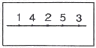
- 대칭법
- 후퇴법
- 전진법
- 비석법
(정답률: 알수없음)